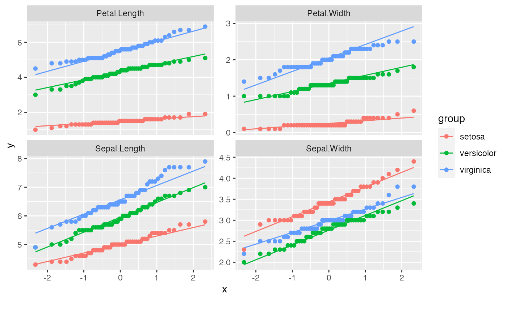
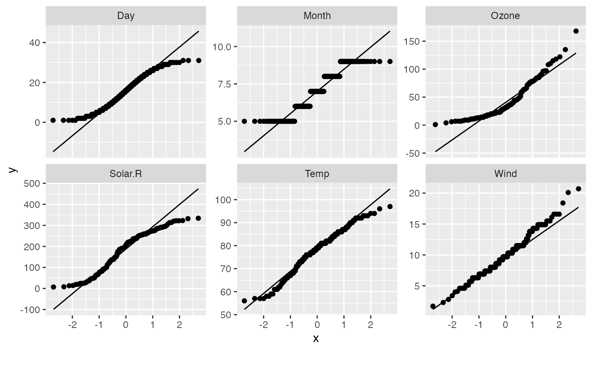

Plot quantile-quantile for each continuous feature
plot_qq( data, by = NULL, sampled_rows = nrow(data), geom_qq_args = list(), geom_qq_line_args = list(), title = NULL, ggtheme = theme_gray(), theme_config = list(), nrow = 3L, ncol = 3L, parallel = FALSE )
| data | input data |
|---|---|
| by | feature name to be broken down by. If selecting a continuous feature, it will be grouped by 5 equal ranges, otherwise, all existing categories for a discrete feature. Default is |
| sampled_rows | number of rows to sample if data has too many rows. Default is all rows, which means do not sample. |
| geom_qq_args | a list of other arguments to geom_qq |
| geom_qq_line_args | a list of other arguments to geom_qq_line |
| title | plot title |
| ggtheme | complete ggplot2 themes. Default is theme_gray. |
| theme_config | a list of configurations to be passed to theme |
| nrow | number of rows per page. Default is 3. |
| ncol | number of columns per page. Default is 3. |
| parallel | enable parallel? Default is |
invisibly return the named list of ggplot objects
plot_qq(iris)plot_qq(iris, by = "Species", ncol = 2L)plot_qq( data = airquality, geom_qq_args = list(na.rm = TRUE), geom_qq_line_args = list(na.rm = TRUE) )